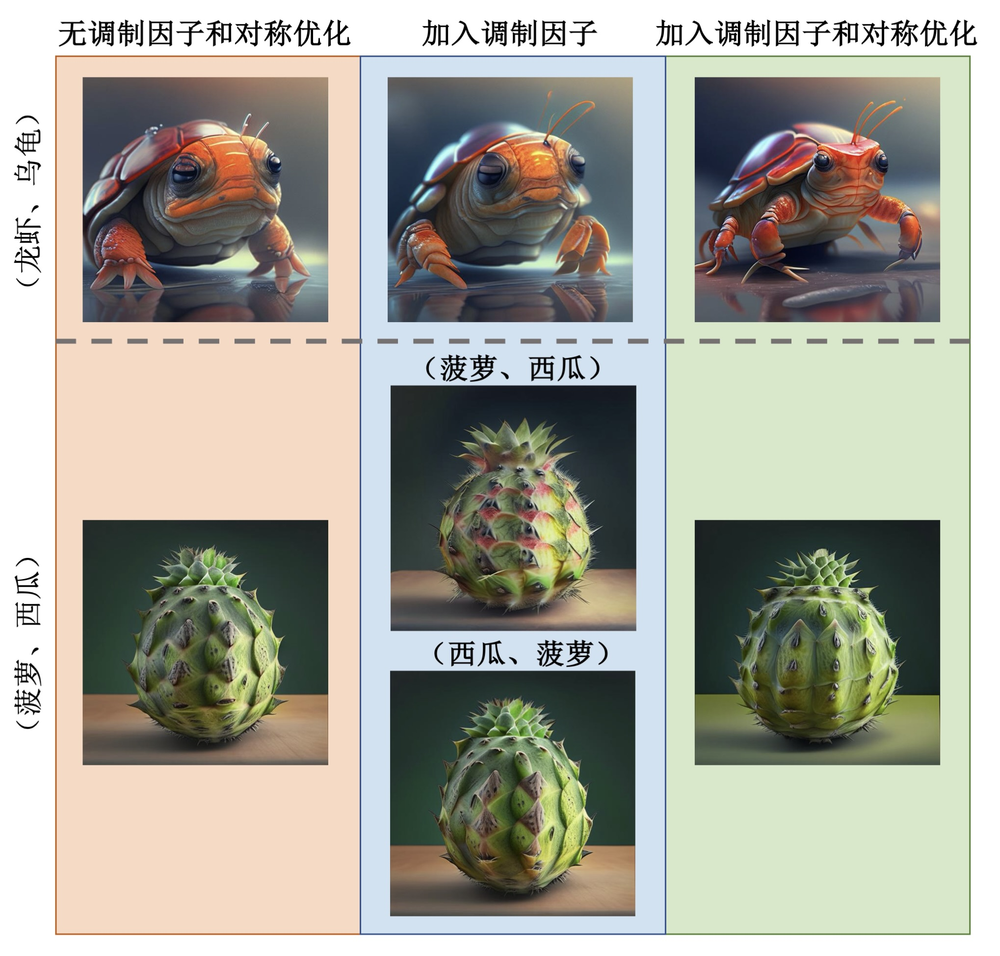

摘要
得益于扩散模型的迅速发展，文生图（Text-to-Image，T2I）技术取得了重大突破，已经能够生成媲美真实场景的图像。然而，大规模样本的学习导致扩散模型在生成时习惯于复制习得的范式，限制了扩散模型本身的创造力。为了挖掘扩散模型潜在的创造能力，本文从文本对语义融合（Text Pair-to-Object，TP2O）任务入手对扩散模型创意展开研究。本文沿用文本嵌入的思想，致力于在扩散先验模型的输出空间中优化得到一个全新的嵌入向量表示文本对融合后的全新概念。基于此目标，本文提出一种叫做对称调制融合（Symmetric Modulation Fusion，SMF）的方法，首先对于扩散先验模型输出的文本向量点乘一个自适应调制因子，随后文本对交替组合与新的概念向量按照余弦相似度进行优化，形成对称式优化过程，最后将得到的全新概念向量送入解码器中进行图像的生成。为了评估本文SMF方法的性能，本文首先与目前最先进的T2I模型进行了对比，证明了本文的方法在文本语义融合中具有更好的表现。随后，本文与其他TP2O方法进行了对比，结果表明SMF在生成的图像质量、细节和语义方面均高于其他模型。另外，消融实验证明自适应调制因子能够提升图像的细节，而对称优化过程能够保证语义的均衡融合。最后，本文设计了可视化网页对研究结果和优化过程进行了展示。
模型结构
ConceptLab证明了创造性生成问题可以被表述为扩散先验模型输出空间上的优化过程，从而产生一组“先验约束”。基于同样的框架，下图给出了本文的模型框架。可以看到，本文的模型将TP2O任务整体上分为两步。首先，对于一个文本对(t_1，t_2)融合的全新概念v_*，经过文本编码和扩散先验后，在输出空间上产生一个嵌入向量l_*，模型的目标是对l_*进行优化，使得它与文本对向量的余弦距离最小。另外，输入的文本对(t_1，t_2)，经过文本编码后会得到各自的文本向量，包含各自的语义特征信息，其次，本文定义了一个自适应的特征调制因子用来对特征进行放大，并按两种方式组合成一个特征向量与l_*进行优化，最后两种方式优化后的向量平均融合后被送入U-Net解码器进行最终图像的生成，本文将这种方法定义为SMF方法。可以看到，由于SMF方法的优化过程具有对称性，因此保证了优化过程中语义信息的均衡融合，能够实现更好的融合效果。
实验
与最先进文生图模型的比较
SMF方法与目前最先进的文生图大模型进行了对比，包括MidJourney v6.0、SD 3和DALLE 3。SMF方法的提示词即为文本对(t_1，t_2)，而常规文生图大模型的提示词为“a mixture of t_1 and t_2”，对比结果展示在图3-2中。尽管最先进的文生图模型经过了大规模样本集的训练，但是由于TP2O任务的独特创造性，它们通常只是将文本对作为两个独立的个体进行表达，如（鱼，熊猫），而不能实现文本对语义的融合。另外，针对某些文本对，DALLE 3表现出了一定的语义融合创造力，如（鱼、马）、（鱼、熊猫）、（凤梨、鹦鹉），但是值得注意的是，尽管文本对具有一定的融合，但仅是已知视觉概念的融合，而没有表现出特征层次深度融合后产生的全新视觉概念，比如（鱼、熊猫）在SMF方法中产生了超出鱼和熊猫已知视觉概念的全新视觉概念，但同时表现出了熊猫的皮肤以及鱼的嘴巴、胡须等典型视觉特征，实现了深层次融合。相比之下，SMF在语义混合中作出了更佳的表现，不仅仅是对已有视觉概念的融合，并且通过特征的深层次融合，实现了全新视觉概念的创造，充分挖掘了文生图模型的创意能力。然而，SMF的生成结果同样表现出一定的艺术风格，弱化了更加现实的表达。
与其他TP2O方法的比较
本文与其他TP2O方法进行了对比，如ConceptLab、MagicMix和BASS。ConceptLab生成的图片在特征融合上表现并不均衡，尤其在菠萝和西瓜的融合中，ConceptLab生成的视觉概念过于偏向菠萝，并没有体现出西瓜的特征。与之相比，SMF更好的均衡了二者的特征，保留了菠萝的叶片和尖刺，同时融合了西瓜的外观。另外，在龙虾和乌龟的融合中，ConceptLab表现出了更好的细节，如龟壳的光泽、龙虾的触角等。 MagicMix尽管在老虎和兔子的融合中表现出色，但是在鱼和马的输入中没有表现出融合效果，同时青蛙和柯基的融合偏离现实主义。SMF仅在鱼和马的混合中表现出了一定的艺术风格，而对于三个文本对都表现出了均衡的特征融合，生成了全新的概念并且具有现实主义风格。 与ConceptLab和MagicMix相比，BASS在文本对融合中表现更加出色。但是其在（菠萝、葡萄），（秃鹫、西葫芦）和（蜗牛、长颈鹿）三个文本对的融合中表现不均衡。（菠萝、葡萄）的混合新概念更加偏向于菠萝，而（秃鹫、西葫芦）和（蜗牛、长颈鹿）对于两个文本的特征均表达较少。与BASS相比，SMF则生成了更均衡的全新概念，尤其是（菠萝、葡萄）、（蜗牛、长颈鹿），同时，SMF生成的全新概念更加贴近于现实世界。

消融实验
为了进一步证明本文提出的SMF方法的科学性，本文对自适应调制因子和对称优化结构进行了消融实验。本文选取了（龙虾、乌龟）和（菠萝、西瓜）两个文本对实例进行展示，实验结果如图3-4所示。对于（龙虾、乌龟）文本对，可以发现，添加调制因子后，生成图片的细节具有明显提升，如龙虾的触角、龙虾的足部以及乌龟的龟壳。进一步，加入对称优化结构后，图片细节进一步提升，同时图片的整体质量提升更加明显。说明我们提出的SMF方法在TP2O任务有效。对于（菠萝、西瓜）文本对，本文发现，添加调制因子后，生成的图片在捕捉西瓜的细节中具有明显的提升，但是文本对的先后顺序对生成的结果产生了巨大的影响。随后，继续添加对称优化结构，由于添加后的优化过程具有对称性，完美解决了文本对位置的影响，同时由于对称式结构，生成的创新概念在融合两个文本的特征方面更加均衡。因此，可以认为SMF方法对文本对融合的均衡性和细节具有明显的提升作用。
优化过程动态展示
下面通过两个视频展示了SMF方法的优化过程。由于优化过程步数过多，每一步的图像全部展示及其不现实，因此，本文每100步对图像进行展示。